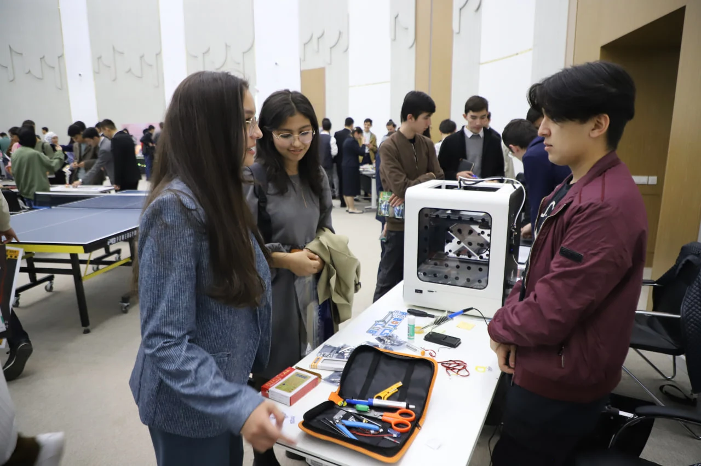
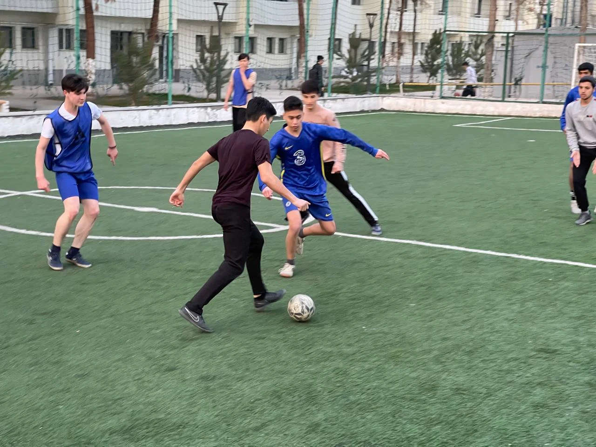
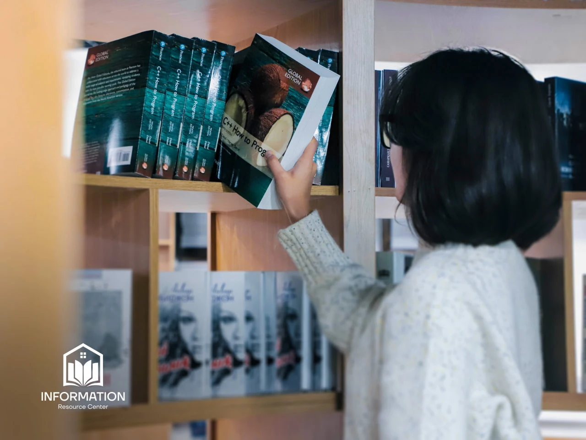
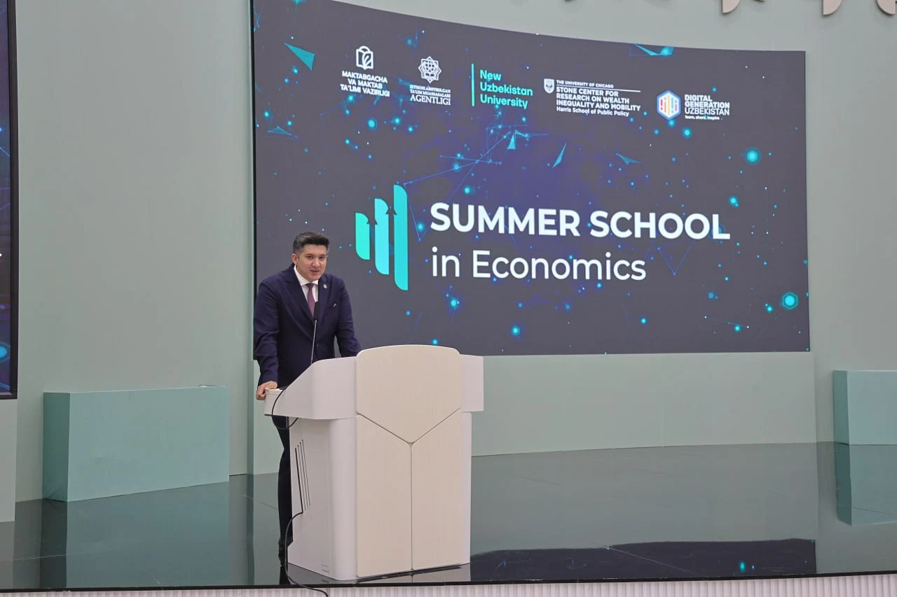

Navoiy davlat
Navoiy davlatuniversitetiNAVDU Qabul 2026
Navoiy davlat universiteti — katta maqsadlar,
yangi g‘oyalar va sizning keyingi qadamingiz.
Bakalavriatdan ilmiy izlanishlargacha.
O‘zingizga mos yo‘nalishni tanlang.
Kasbiy yo‘lingiz uchun
mustahkam poydevor.
Mutaxassisligingiz bo‘yicha
chuqur bilim va tajriba.
Yangi g‘oyalar va
mustaqil ilmiy tadqiqotlar.
Yangi ko‘nikmalar.
Yanada keng imkoniyatlar.

Bu yerda bilim faqat auditoriyada qolmaydi. U yangi loyihalar, ilmiy izlanishlar va hayotiy tajribaga aylanadi.
Talabalar, ustozlar va hamkorlar birgalikda o‘rganadigan, izlanadigan va yangilik yaratadigan universitet.
Yangi do‘stlar, ilk yutuqlar va unutilmas lahzalar.
NavDU hayotining bir qismiga aylaning.



Asosiy kampus 10:00
Ilmiy markaz 14:00
Qiziqishingizni toping.
Biz bilan yangi imkoniyatlarni oching.